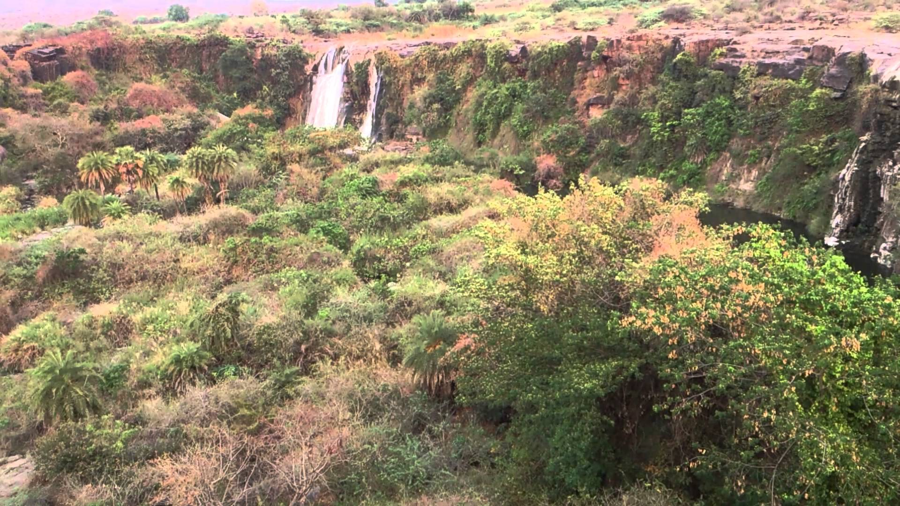

To Search for Holiday Ideas, Plan Your Trip and more.
WELCOME TO ANDHRA
Ethipothala Falls
Ethipothala Falls is a 70 feet (21 m) high river cascade, situated in Guntur district, Andhra Pradesh India. Located on the Chandravanka river, which is a tributary of River Krishna joining on its right bank. The waterfall is a combination of three streams namely Chandravanka Vagu, Nakkala Vagu and Tummala Vagu. It is situated about 11 kilometres (6.8 mi) from Nagarjuna Sagar Dam.[1] The river then joins the Krishna river after the dam after travelling about 3 kilometres (1.9 mi) from the falls. A strategic view point was created by Andhra Pradesh Tourism Department from the adjacent hillock.

The etymology - name of the falls Ethipothala is derived from "eththi", and "potha" Telugu Language means to "lift and pour". Alternatively it could also have been possibly derived from "eththu" (1.noun form of the verb eththi - 'lifting', and 2.also the great height from which the water falls) and "potha", meaning the downpour as in kundapotha, connoting the downpour of water from a great height.
Incidentally the word ethipothala is also a terminology coined in Telugu for Lift Irrigation. It is a misnomer for the people assume that "Ethipothala Falls" are part of Lift Irrigation Scheme. As far as "Ethipothala Falls" are concerned it has nothing to do with Government's "Ethipothala Padhakam".
There are Ranganatha and Dattatreya temples in the vicinity. There is a crocodile breeding centre in the pond formed by the water fall. Water from the Nagarjuna Sagar right bank canal is released in to the above streams to keep the water fall alive or flowing throughout the year for tourism purpose.